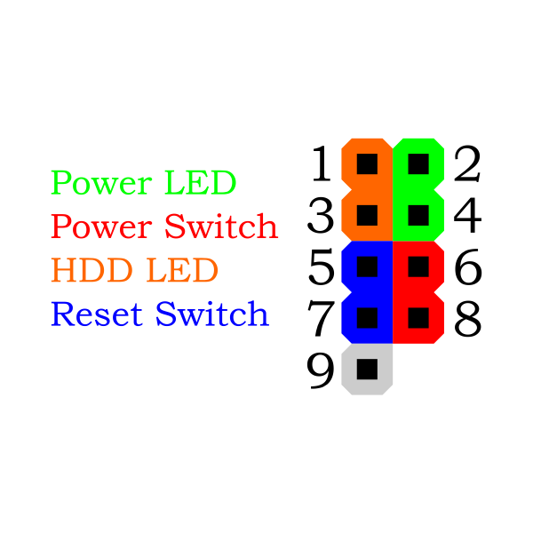
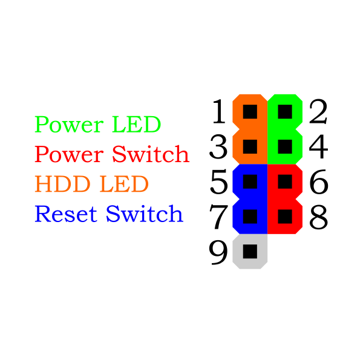

El panel frontal de una computadora generalmente incluye varios componentes y puertos. Estos pueden variar dependiendo del fabricante del modelo de la computadora, pero aquí hay algunos elementos comunes: Botón de encendido: Permite encender y apagar la computadora. Indicadores LED: Luces que indican el estado de la computadora, como si está encendida o si hay actividad en el disco duro. Conectores USB: Permiten conectar dispositivos externos, como teclados, ratones, impresoras, cámaras, entre otros. Conector de auriculares: Permite conectar auriculares o altavoces para escuchar audio. Conector de micrófono: Permite conectar un micrófono para grabar audio o realizar llamadas. Lector de tarjetas de memoria: Algunas computadoras tienen un lector de tarjetas de memoria en el panel frontal, lo que facilita la transferencia de datos desde tarjetas de memoria como las utilizadas en cámaras digitales.